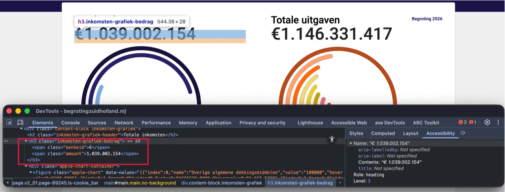
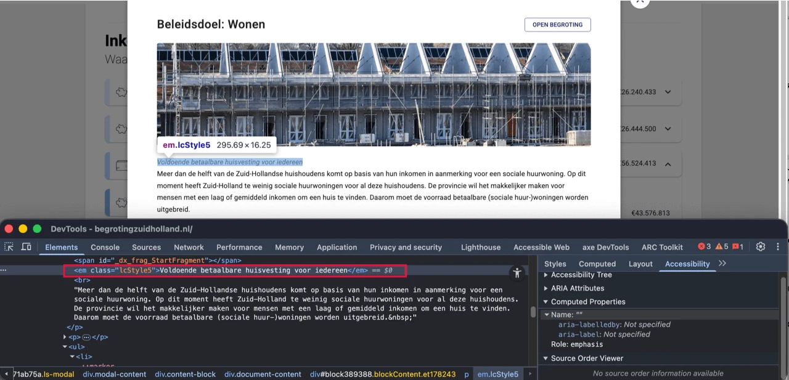

Link naar pagina: https://begrotingzuidholland.nl/
#1 - Kop niet gemarkeerd als kop
Op deze pagina is de tekst “Begroting 2026” niet opgemaakt als kop.
Voor bezoekers die hulpsoftware gebruiken, is tekst die visueel als kop is vormgegeven maar niet als kop is gemarkeerd in de code niet bruikbaar. Deze bezoekers navigeren via koppen om de inhoud te scannen of snel naar een specifieke sectie te gaan. Dit is alleen mogelijk wanneer koppen ook in de code als kop zijn vastgelegd. Wanneer koppen uitsluitend visueel zijn vormgegeven, bijvoorbeeld door vetgedrukte tekst, wijkt de informatiestructuur in de code af van de visuele structuur van de pagina.
Op deze pagina staat een instructie om de koppenstructuur van een webpagina te testen: https://properaccess.nl/zo-controleer-je-de-koppenstructuur-van-je-website/.
Dit probleem is ook aanwezig bij teksten zoals “Beleidsdoel: Sterke samenleving”, “Beleidsdoel: Krachtig openbaar bestuur” en andere, in de dialoogvensters die worden geopend met de knoppen “Bekijk beleidsdoel”. Deze knoppen staan in onderdelen met verborgen inhoud, bijvoorbeeld in het onderdeel dat wordt geopend met “Samenwerken aan Zuid-Holland”.
Een vergelijkbaar probleem is aanwezig bij de teksten “Circulair Zuid-Holland”, “Bedrijventerreinen”, “Kantoren” en “Detailhandel” in het dialoogvenster “Beleidsdoel: Toekomstbestendig economisch vestigingsklimaat”. Dit dialoogvenster wordt geopend met de knop “Bekijk beleidsdoel” in het onderdeel “Een welvarend Zuid-Holland”. Dit probleem is ook aanwezig in andere dialoogvensters die worden geopend met de knoppen “Bekijk beleidsdoel” die staan in onderdelen met verborgen inhoud.
Oplossing:
Markeer koppen met het juiste HTML-element en gebruik daarbij het correcte kopniveau (<h1> tot en met <h6>).
#2 - Onjuist gebruik van een kop-element

De teksten “€ 1.039.002.154” en “€ 1.146.331.417” op deze pagina zijn geen koppen, maar zijn onterecht opgemaakt met een <h3>-element om de tekst groter weer te geven.
De gemarkeerde tekst introduceert geen inhoud en functioneert daardoor niet als kop. Door het gebruik van een <h3>-element krijgt de tekst onterecht deze betekenis.
Het kop-element (<h3>) is niet betekenisvol gebruikt, maar om een visueel effect te creëren. De tekst die als kop is gemarkeerd, is inhoudelijk geen kop, omdat er geen onderliggende inhoud volgt. Kop-elementen zijn bedoeld om structuur aan te brengen in de informatie op een pagina. Gebruikers van schermlezers vertrouwen op koppen om te navigeren en de opbouw van de pagina te begrijpen. Kop-elementen zijn daarom niet bedoeld voor uitsluitend visuele opmaak.
Oplossing:
Verwijder het <h3>-element en gebruik een ander passend element, zoals een <p>-element. De gewenste visuele stijl kan vervolgens met CSS worden toegepast.
Op deze pagina staat een instructie om koppen op een webpagina te testen: https://properaccess.nl/zo-controleer-je-de-koppenstructuur-van-je-website/.
#3 - Koppen zijn niet als kop gemarkeerd

Op deze pagina zijn er teksten die koppen zijn, maar waarbij de kop-elementen ontbreken. Er is een <em>-element gebruikt om deze teksten eruit te laten zien als koppen. Zie bijvoorbeeld de teksten “Voldoende betaalbare huisvesting voor iedereen”, “Toekomstbestendig bouwen” en “Rolneming” in het dialoogvenster “Beleidsdoel: Wonen”. Dit dialoogvenster wordt geopend met de knop “Bekijk beleidsdoel” in het onderdeel “Sterke steden en dorpen in Zuid-Holland”.
Het <em>- element is niet bedoeld om koppen mee te markeren. Het element geeft uitsluitend nadruk aan tekst en heeft geen semantische betekenis als kop.
Koppen worden gebruikt om de structuur van een tekst vast te leggen. Alleen wanneer koppen met een kop-element (<h1> tot en met <h6>) zijn gemarkeerd, kan hulpsoftware deze structuur herkennen en correct interpreteren.
Oplossing:
Verwijder het <em>- element en markeer deze tekst met een passend kop-element, zoals <h2> of <h3>. De visuele opmaak kan eventueel met CSS worden toegepast.
Dit type element wordt vaak toegevoegd via de knop “B” (vet) in een tekstbewerker.